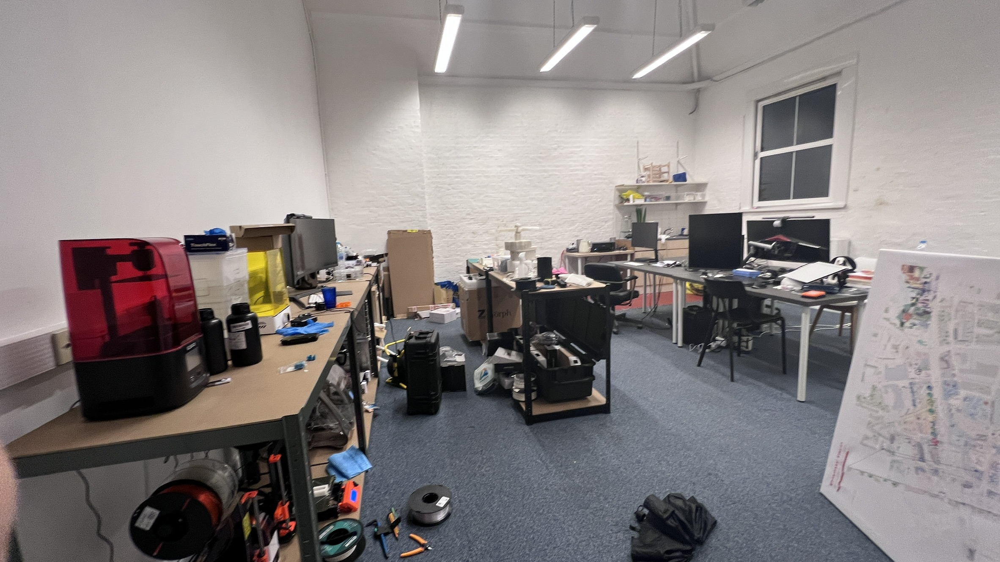
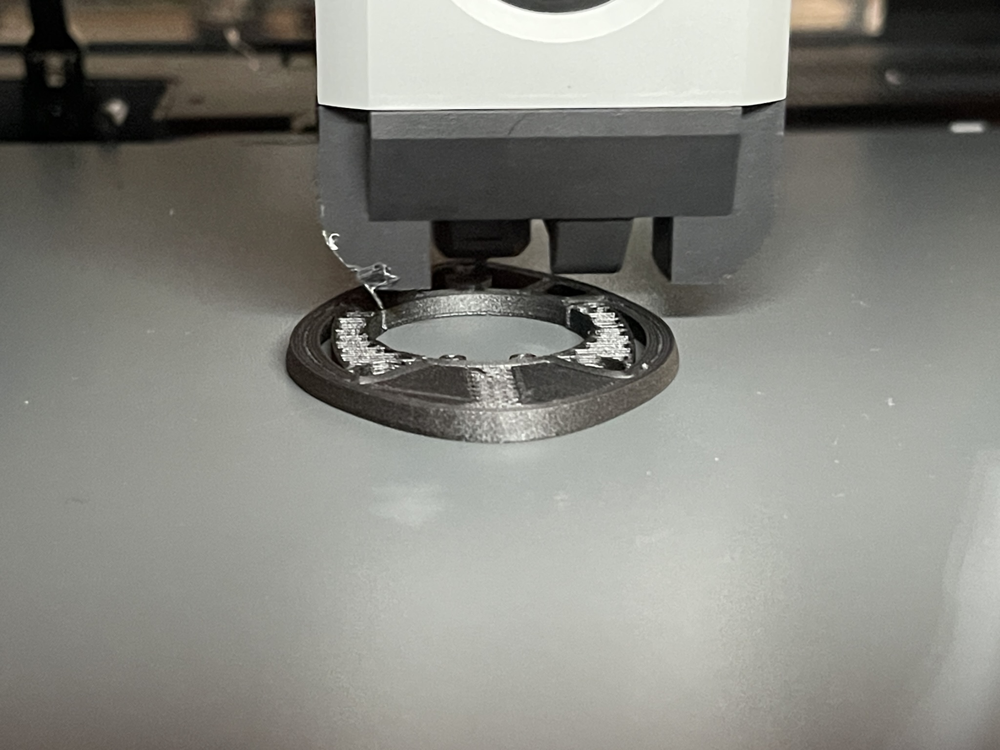
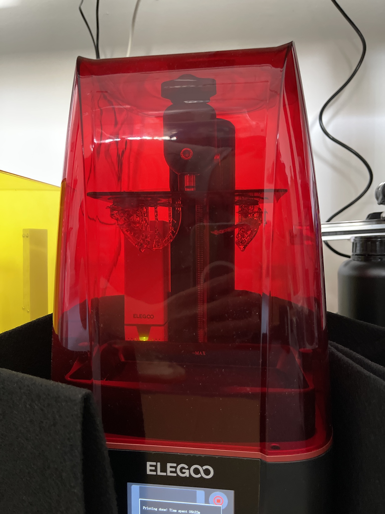
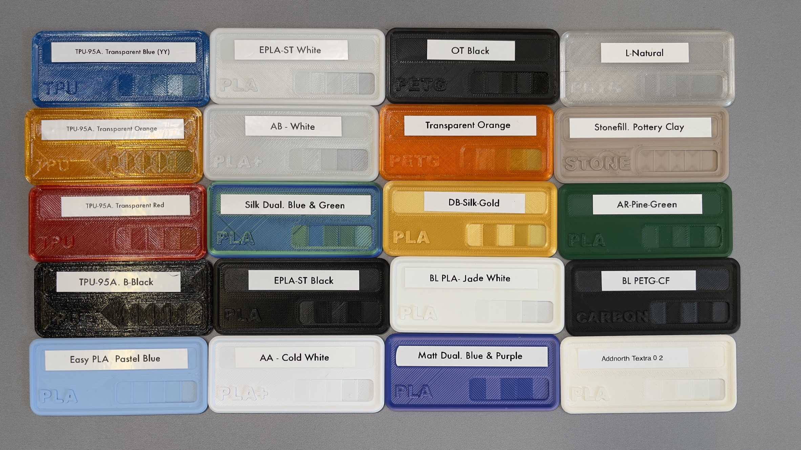
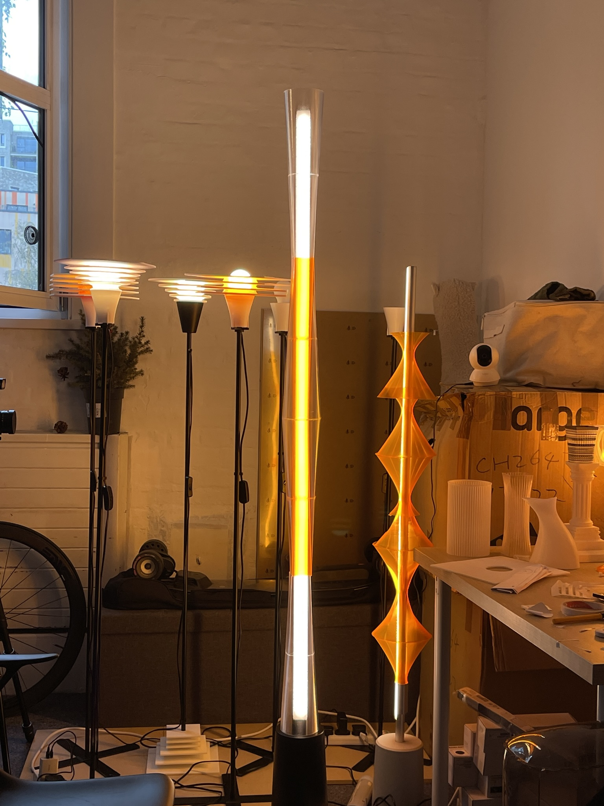
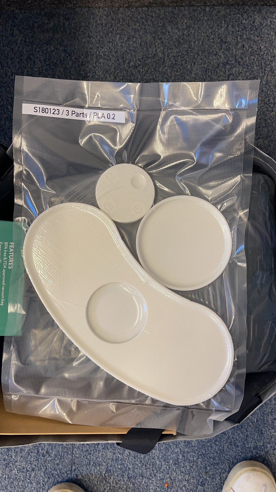

Co-founded a commercial 3D-printing studio, bootstrapped from a £5k seed to 10+ machines in five months. FDM, SLA/DLP resin, and SLS — running design-literate fabrication for architecture, product, and film clients.
Mel Studio was a commercial 3D-printing operation co-founded in London, serving design, architecture, and product clients needing high-quality rapid prototyping and small-batch production. Starting with a £5k seed investment, the studio scaled to over 10 machines within five months and delivered 60+ named client jobs — including individual batch orders of 200+ units for product launches.
The business operated across FDM, resin (SLA/DLP), and SLS workflows, with a focus on turnaround speed, finish quality, and the ability to handle complex briefs — from 200+ unit batch orders and film-crew prop assets to bespoke architectural models and functional prototypes.
Founding & growth.
01 / FOUNDINGThe studio started with a straightforward hypothesis: there was unmet demand for reliable, design-literate 3D-printing services in London — clients who needed someone who understood design intent, not just file-to-print execution. The initial £5k covered two FDM machines, materials, and workspace.
Growth was organic and fast. Word-of-mouth from early architecture and product-design clients drove demand beyond initial capacity within weeks. The studio scaled to 10+ machines within five months, adding resin and SLS capability to serve a wider range of material and finish requirements.


Operations.
02 / OPSRunning the studio required managing the full production chain: client intake and brief translation into print specifications, machine scheduling across simultaneous jobs, post-processing and finishing, quality review, supplier and material sourcing, and final delivery with project documentation.
Internal workflows and documentation standards were built from scratch — covering file-preparation checklists, machine-maintenance schedules, QC protocols, and client-communication templates. These systems enabled consistent quality at increasing volume and were used to train new team members as the operation grew.



Client work.
03 / CLIENTSThe studio's client base spanned architecture firms, product designers, film-production companies, dental laboratories, custom bike-fitters, and individual makers. Project types ranged from rapid concept models and architectural competition entries to functional engineering prototypes and large-batch production runs.
Notable work included 200+ unit batch orders for product launches, prop fabrication for film crews requiring fast turnaround on complex geometries, FDM and SLA lamp-shade designs (lamp bases and electronics sourced; shades designed and fabricated in-house), and bespoke prototyping for design consultancies where finish quality and dimensional accuracy were critical for client presentations.
Over the studio's lifetime, 60+ named client jobs ran through the books — CSM students and recent graduates, Cannondale custom bike-fit spacers, dental tech work, film props, and bespoke architectural commissions among them.


Running Mel Studio was the most concentrated education in operations, client management, and business reality I've had. Design skill gets you the first few clients; operational reliability gets you the repeat business. The hardest lessons were about capacity planning — when to say no to a job, when to invest in new equipment versus optimising existing throughput, and how to price work that accurately reflects time, material, and expertise.
The experience directly informed how I approach design work now: with a much stronger sense of what manufacturing actually costs, what clients actually need (versus what they ask for), and how to build systems that scale without breaking.